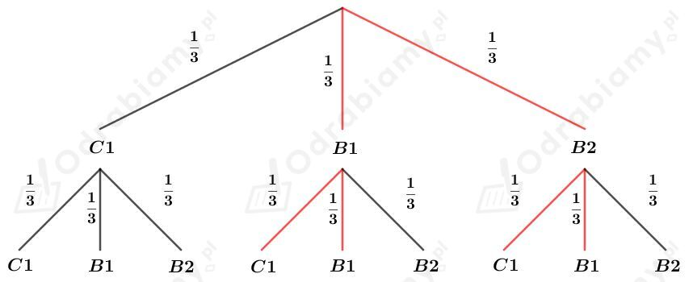
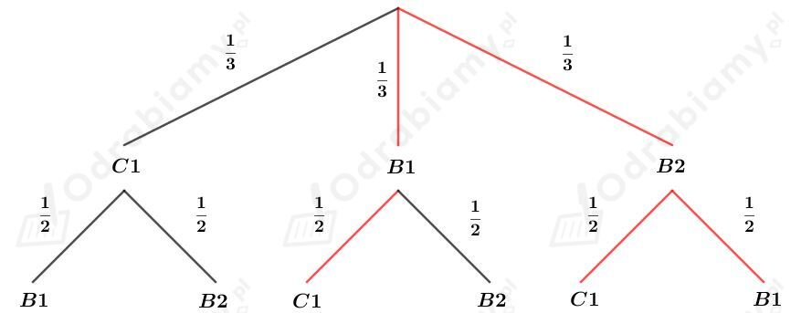

a)
Tworzymy czterocyfrowe liczby, których iloczyn cyfr wynosi 8.
Zauważmy, że:
Wypiszmy możliwości z wystąpieniem trzech 1 i jednej 8: 1811, 1181, 1118, 8111.
Wypiszmy możliwości z wystąpieniem dwóch 1, jednej 2 i jednej 4: 2411, 2141, 2114, 4112, 4121, 4211, 1124, 1142, 1241, 1421, 1214, 1412.
Wypiszmy możliwości z wystąpieniem trzech 2 i jednej 1: 2221, 2212, 2122, 1222.
Liczba wszystkich możliwości: 20
b)
Tworzymy czterocyfrowe liczby, których iloczyn cyfr wynosi 10.
Zauważmy, że
Wypiszmy możliwości z wystąpieniem dwóch 1, jednej 2 i jednej 5: 2511, 2151, 2115, 5112, 5121, 5211, 1125, 1152, 1251, 1521, 1215, 1512.
Liczba wszystkich możliwości: 12
a)
Tworzymy czterocyfrowe liczby parzyste, w których zapisie mogą wystąpić tylko 0, 1, 2, 3 i 4.
Zauważmy, że aby liczba była parzysta, to cyfrą jedności musi być cyfra 0, 2 lub 4.
Na pierwszym miejscu możemy wstawić cyfry 1, 2, 3 lub 4, czyli są 4 możliwości.
Na drugim miejscu możemy wstawić dowolną cyfrę spośród podanych, czyli jest 5 możliwości.
Na trzecim miejscu możemy wstawić dowolną cyfrę spośród podanych, czyli jest 5 możliwości.
Na czwartym miejscu możemy wstawić cyfry 0, 2 lub 4, czyli są 3 możliwości.
Wyznaczmy liczbę wszystkich możliwości utworzenia takich liczb:
b)
Tworzymy czterocyfrowe liczby parzyste, w których występuje dokładnie jedna cyfra 0 i dokładnie jedna cyfra 3.
Cyfra 0 może zajmować tylko miejsce setek, dziesiątek lub jedności. Rozważmy więc trzy sytuacje.
1) Cyfra 0 jest cyfrą jedności (liczba będzie wtedy parzysta, co spełnia warunki zadania).
Cyfrę 3 umieszczamy na 3 sposoby.
Pozostałe dwa miejsca zajmują dwie cyfry spośród cyfr 1, 2, 4, 5, 6, 7, 8, 9, zatem możemy umieścić na tych dwóch miejscach 8 cyfr. Stąd
2) Cyfra 0 jest cyfrą dziesiątek.
Cyfrę 3 umieszczamy na 2 sposoby (bo skoro liczba jest parzysta, to cyfra 3 nie może zająć cyfry jedności).
Miejsce jedności mogą zająć cyfry 2, 4, 6, 8, czyli 4 sposoby.
Pozostałe jedno miejsce mogą zająć cyfry 1, 2, 4, 5, 6, 7, 8, 9, czyli 8 sposobów. Stąd
3) Cyfra 0 jest cyfrą setek.
Cyfrę 3 umieszczamy na 2 sposoby (bo skoro liczba jest parzysta, to cyfra 3 nie może zająć cyfry jedności).
Miejsce jedności mogą zająć cyfry 2, 4, 6, 8, czyli 4 sposoby.
Pozostałe jedno miejsce mogą zająć cyfry 1, 2, 4, 5, 6, 7, 8, 9, czyli 8 sposobów. Stąd
Podsumowując, wszystkich możliwości utworzenia takich liczb jest:
a)
Tworzymy liczby czterocyfrowe nieparzyste, w których zapisie występują tylko cyfry 4 i 5.
Miejsce tysięcy może zająć cyfra 4 lub 5, czyli 2 możliwości.
Miejsce setek może zająć cyfra 4 lub 5, czyli 2 możliwości.
Miejsce dziesiątek może zająć cyfra 4 lub 5, czyli 2 możliwości.
Miejsce jedności może zająć tylko cyfra 5 (bo liczba jest nieparzysta), czyli 1 możliwość.
Stąd wszystkich takich liczb jest:
b)
Tworzymy liczby czterocyfrowe nieparzyste, w których zapisie występuje dokładnie jedna cyfra 4 i dokładnie jedna cyfra 5.
Rozważmy przypadki:
1) Cyfra 5 na cyfrze jedności i cyfra 4 na cyfrze tysięcy.
Miejsca na cyfrę setek i dziesiątek możemy uzupełnić na 8 sposobów, czyli:
2) Cyfra 5 na cyfrze jedności i cyfra 4 na cyfrze setek lub dziesiątek.
Cyfra 4 znajduje się na cyfrze setek lub dziesiątek, zatem mamy 2 sposoby.
Cyfrę tysięcy możemy uzupełnić na 7 sposobów (bo bez cyfry 0).
Pozostałe miejsce możemy uzupełnić na 8 sposobów. Zatem mamy:
3) Cyfra 5 na cyfrze tysięcy i cyfra 4 na cyfrze setek lub dziesiątek.
Cyfra 4 znajduje się na cyfrze setek lub dziesiątek, zatem mamy 2 sposoby.
Pozostałe miejsce (setki lub tysiące) możemy uzupełnić na 8 sposobów.
Miejsce dla cyfry jedności możemy uzupełnić na 4 sposoby (bo liczba jest nieparzysta). A więc:
4) Cyfra 5 i cyfra 4 na miejscu dla cyfry tysięcy lub dziesiątek.
Miejsce dla cyfry 5 wybieramy na 2 sposoby, zatem miejsce dla cyfry 4 wybieramy na pozostały 1 sposób.
Cyfrę setek uzupełniamy na 7 sposobów.
Miejsce dla cyfry jedności możemy uzupełnić na 4 sposoby (bo liczba jest nieparzysta). A więc:
5) Cyfra 4 na cyfrze tysięcy, a cyfra 5 na cyfrze setek lub dziesiątek.
Cyfra 5 znajduje się na cyfrze setek lub dziesiątek, zatem mamy 2 sposoby.
Pozostałe miejsce (setki lub tysiące) możemy uzupełnić na 8 sposobów.
Miejsce dla cyfry jedności możemy uzupełnić na 4 sposoby (bo liczba jest nieparzysta). A więc:
Sumujemy teraz otrzymane liczby możliwości i mamy:
Mamy 360 możliwości utworzenia takich liczb.
a)
Ustawiamy w kolejce 2 kobiety i 6 mężczyzn w taki sposób, aby kobiety stały obok siebie.
Możliwości ustawienia:
KKMMMMMM, MKKMMMMM, MMKKMMMM, MMMKKMMM, MMMMKKMM, MMMMMKKM, MMMMMMKK
Zbadajmy pierwszą możliwość: KKMMMMMM
Pierwsza kobieta może wybrać miejsce na 2 sposoby.
Druga kobieta może wybrać miejsce na 1 sposób.
Pierwszy mężczyzna może wybrać miejsce na 6 sposobów.
Drugi mężczyzna może wybrać miejsce na 5 sposobów.
Trzeci mężczyzna może wybrać miejsce na 4 sposoby.
Czwarty mężczyzna może wybrać miejsce na 3 sposoby.
Piąty mężczyzna może wybrać miejsce na 2 sposoby.
Szósty mężczyzna może wybrać miejsce na 1 sposób.
Liczba takich możliwości:
W pozostałych możliwościach ustawienia liczba możliwości jest taka sama, zatem liczba wszystkich możliwości jest równa:
b)
Ustawiamy w kolejce 4 kobiety i 4 mężczyzn w taki sposób, aby kobieta nie stała za kobietą.
Możliwości ustawienia:
KMKMKMKM, MKMKMKMK, KMMKMKMK, KMKMKMMK, KMKMMKMK
Zbadajmy pierwszą możliwość: KMKMKMKM
Pierwsza kobieta może wybrać miejsce na 4 sposoby.
Pierwszy mężczyzna może wybrać miejsce na 4 sposoby.
Druga kobieta może wybrać miejsce na 3 sposoby.
Drugi mężczyzna może wybrać miejsce na 3 sposoby.
Trzecia kobieta może wybrać miejsce na 2 sposoby.
Trzeci mężczyzna może wybrać miejsce na 2 sposoby.
Czwarta kobieta może wybrać miejsce na 1 sposób.
Czwarty mężczyzna może wybrać miejsce na 1 sposób.
Liczba takich możliwości:
W pozostałych możliwościach ustawienia liczba możliwości jest taka sama, zatem liczba wszystkich możliwości jest równa:
Rzucamy dwa razy kostką.
Niech Ω będzie przestrzenią zdarzeń elementarnych. Wtedy
Niech A będzie zdarzeniem polegającym na tym, że dokładnie w jednym z rzutów wypadnie co najmniej 5 oczek.
Wypiszemy elementy zbioru A:
Stąd
Wyznaczmy prawdopodobieństwo zdarzenia A. Mamy:
Niech B będzie zdarzeniem polegającym na tym, że suma oczek, które wypadną w obydwu rzutach, jest nie mniejsza od 8.
Wypiszmy elementy zbioru B:
Stąd
Wyznaczmy prawdopodobieństwo zdarzenia B. Mamy:
Zatem mamy
Odp. Bardziej prawdopodobne jest zdarzenie A.
Dana jest kostka, której dwie ścianki są zielone, a cztery czerwone. Rzucamy taką kostką dwukrotnie.
a)
Niech A oznacza zdarzenie polegające na tym, że co najmniej raz wypadła ścianka zielona.
Możliwości jakie może uzyskać: ZC, CZ, ZZ.
Wyznaczmy prawdopodobieństwo zdarzenia A. Mamy:
b)
Niech B oznacza zdarzenie polegające na tym, że co najwyżej raz wypadła ścianka czerwona.
Możliwości jakie możemy uzyskać: ZC, CZ, ZZ
Prawdopodobieństwo będzie takie samo jak w podpunkcie a), ponieważ interesują nas takie same możliwości. Więc
Student zna odpowiedzi na 6 spośród 15 pytań. Na egzaminie losuje 4 spośród 15 pytań.
Prawdopodobieństwo wylosowania pytania, na które zna odpowiedź wynosi 6/15.
Prawdopodobieństwo wylosowania pytania, na które nie zna odpowiedzi wynosi 9/15.
Wyznaczmy prawdopodobieństwo, że student nie zna odpowiedzi na wszystkie wylosowane pytania. Mamy:
Zatem możemy teraz wyznaczyć prawdopodobieństwo, że student zna odpowiedź przynajmniej na jedno pytanie. Mamy:
Odp. Prawdopodobieństwo tego, że student zna odpowiedź na co najmniej jedno z wylosowanych pytań wynosi 59/65.
Rzucamy cztery razy niesymetryczną monetą. Prawdopodobieństwo wypadnięcia orła jest równe 1/3, a reszki 2/3.
a)
Wyznaczmy prawdopodobieństwo wypadnięcia czterech reszek. Mamy:
b)
Wypadnięcia co najmniej trzech reszek to sytuacje: RRRO, RROR, RORR, ORRR, RRRR.
Wyznaczmy prawdopodobieństwo wypadnięcia co najmniej trzech reszek. Mamy:
Dana jest urna z kulą czarną o numerze 1 oraz z dwiema kulami białymi o numerze 1 oraz 2.
a)
Losujemy ze zwracaniem dwie kule z tej urny.
Przedstawmy na drzewie ilustrację tego doświadczenia.

Interesujące gałęzie zaznaczyliśmy na czerwono.
Wyznaczmy prawdopodobieństwo tego, że pierwsza kula jest biała, a druga ma numer nieparzysty. Mamy:
b)
Losujemy bez zwracania dwie kule z tej urny.
Przedstawmy na drzewie ilustrację tego doświadczenia.

Interesujące gałęzie zaznaczyliśmy na czerwono.
Wyznaczmy prawdopodobieństwo tego, że pierwsza kula jest biała, a druga ma numer nieparzysty. Mamy: